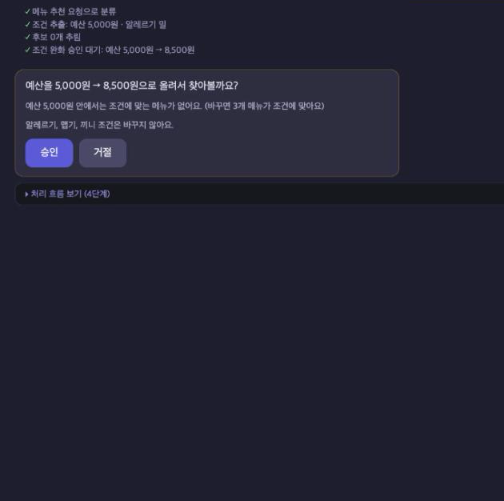
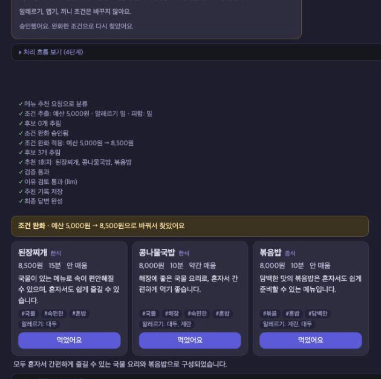
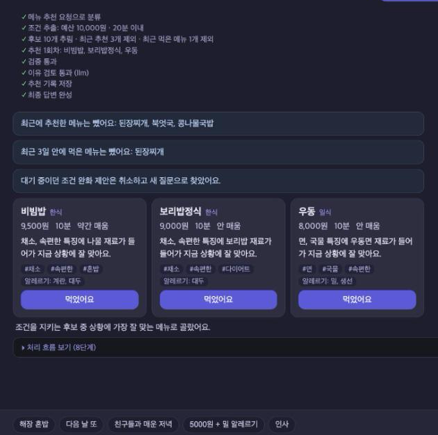

노트북에서 만든 메뉴 추천 그래프를 sample 프로젝트 구조 위에서 실제로 쓸 수 있는 서비스로 옮겼다.
노트북 10절에 적어 둔 한계 다섯 가지와 이번에 새로 찾은 두 가지를 고치는 게 목표였다.
| 노트북(Before) | 이번에 바꾼 것(After) | |
|---|---|---|
| 예산·시간 조건을 묻지 않고 풀었다 | 풀기 전에 interrupt() 로 승인을 받는다 | 10절 |
| 이유 문장을 검사하지 않았다 (맵기 2 제육볶음을 "매운맛 강함") | review 노드가 이유와 메뉴 데이터를 대조한다 | 10절 |
| MemorySaver 라 재시작하면 최근 추천을 잊었다 | 최근 추천·식사 기록을 SQLite 에 둔다 | 10절 |
| 메뉴 36개가 코드에 박혀 있었다 | data/ + MCP Tool 로 조회한다 | 10절 |
| 완화 내역을 추천 입력에서 뺐다 (된장찌개 8500원 누락) | 추천 입력에 완화 칸을 되살렸다 | 10절 |
| 후보 목록 밖 메뉴도 조건만 맞으면 통과했다 | verify 가 후보 밖 pick 을 빼고 재추천한다 | 새로 찾음 |
| "해산물" 이 새우 하나로만 바뀌었다 | 새우·오징어·조개·생선으로 펼친다 | 새로 찾음 |
식사 상황을 한 문장으로 적으면 조건에 맞는 메뉴를 최대 3개, 이유와 함께 보여 준다.
LLM 이 예산·시간·알레르기·끼니를 뽑고, 표기는 코드가 데이터에 맞춘다. 밀가루는 밀로, 해산물은 새우·오징어·조개·생선으로 바꾼다.
알레르기·맵기·끼니·최근 추천·먹은 메뉴는 rules.py 가 거른다. LLM 이 무엇을 골라도 verify 를 거쳐야 결과에 들어간다.
후보가 없으면 "예산을 8,500원으로 올려서 찾아볼까요?" 처럼 먼저 묻고 기다린다. 알레르기·맵기·끼니는 풀지 않는다.
review 노드가 이유 속 맵기·국물 표현을 메뉴 데이터와 대조하고, 틀리면 데이터로 만든 문장으로 바꾼다. 기본은 규칙 판정이다.
최근 추천 6개와 식사 기록은 session.db, 승인 대기 상태는 checkpoints.db 에 둔다. 서버를 다시 켜도 이어진다.
추천 카드의 버튼으로 먹은 메뉴를 남긴다. 최근 3일 안에 먹은 메뉴는 다음 추천에서 뺀다.
화면은 Vue, API 는 FastAPI, 판단은 LangGraph 가 맡는다. 데이터는 MCP 서버와 SQLite 에 있다.
판정은 코드가 하고, LLM 은 조건을 뽑고 후보 안에서 고르고 이유를 쓴다.
rules.py 의 판정 함수를 filter 와 verify 가 같이 쓴다. 사본을 두지 않았고, 같은 함수인지 테스트로 확인한다build_graph(deps) 로 LLM 과 menu_repo 를 주입한다. fake·openai·ollama, MCP·로컬을 env 로 바꾼다interrupt() 로 멈추고 Command(resume=...) 로 잇는다. 대기 상태는 AsyncSqliteSaver 가 파일에 남긴다5000원·밀 알레르기 문장이면 예산을 얼마로 올릴지 먼저 묻고, 승인하면 그 조건으로 다시 찾는다.

1. 승인 요청 후보가 0개라 5,000원 → 8,500원을 제안한다. 알레르기·맵기·끼니는 바꾸지 않는다.

2. 승인 후 결과 OpenAI 로 돌린 실제 응답. 완화 내역은 코드가 첫 줄에 쓴다.

3. 재방문 직전 추천 3개와 먹었어요를 누른 메뉴를 빼고 추천한다. 서버를 다시 켜도 같다.
개발과 테스트는 fake LLM 으로 돌리고, 실제 OpenAI 는 스모크와 실측에만 썼다.
| 무엇을 | 결과 | 내용 |
|---|---|---|
| pytest (fake LLM, 네트워크 없음) | 140 passed, 0 failed | 규칙·그래프 경로·API·MCP·화면 경계·데이터 무결성. 27초 |
| 회귀 문장 라이브 실행 (fake, 8600 경유) | 22 / 22 통과 | 노트북 case1~3, 해산물 알레르기, 예외 입력, 재시작 전후 |
| 승인 대기 중 서버 재시작 | 대기 유지 | 다시 켠 뒤 /chat/pending true → 승인 → 추천 완료 |
| 같은 승인을 두 번 보냄 | 두 번째는 409 | 대기가 없으면 NO_PENDING_APPROVAL 로 막는다 |
| OpenAI 스모크 (gpt-4o-mini) | 4 / 4 통과 | case1·case2·case3·승인. 호출 12회, 폴백 0, 안전 검사 전부 통과 |
안전 검사의 알레르기 정답은 시스템 사전이 아니라 사람이 손으로 적은 표에서 가져온다. 같은 사전을 쓰면 시스템과 함께 틀려서 누출을 못 잡는다(해산물 누출을 이렇게 놓쳤었다).
같은 21문장을 같은 모델(gpt-4o-mini, temperature 0)로 두 번씩 돌려 채점했다.
| 지표 | Before (노트북) | After | 메모 |
|---|---|---|---|
| 알레르기 위반 메뉴 (단일 요청) | 3 | 0 | 북엇국 2(데이터 누락), 우동 1(해산물→새우 사전) |
| 해산물 문장에서 알레르기 정규화 누락 | 4 / 4 | 0 / 4 | Before 는 "해산물" 을 새우로만 바꿨다 |
| 재시작 후 직전 추천과 겹친 비율 | 0.963 / 0.926 | 0 | 재방문 10문장. Before 는 MemorySaver 가 비었다 |
| 승인 없이 예산·시간을 푼 실행 | 3 | 0 | After 는 3번 모두 먼저 묻고 풀었다 |
| 응답 시간 중앙값 (ms) | 4,891 / 4,526 | 5,398 / 5,104 | 나빠짐. 약 10~13% 늘었다 |
| 요청당 LLM 호출 수 | 1.95 | 2.95 | 나빠짐. route 분류 호출이 1번 더 있다 |
"a / b" 는 1회차 / 2회차 값이고, 하나만 적은 칸은 두 번 다 같았다. After 는 MCP·SQLite·REVIEW_MODE=rules 로 돌렸고, 승인 요청은 자동으로 승인했다. Before 는 노트북 코드 그대로이고 LLM 전송만 After 와 같은 JSON 모드로 맞췄다.
LLM 판정 reviewer(1차 측정 재사용, 북엇국 데이터 보정 전)는 응답 시간 중앙값 7,470 / 7,292ms, 호출 3.9회였다. 지연·호출 수 비교에만 쓴다.
안전 조건은 지켰지만, 이유 문장의 질과 응답 속도는 아직 손볼 곳이 남아 있다.
asyncio.to_thread 로 감싸면 인터페이스는 그대로 두고 풀 수 있다.